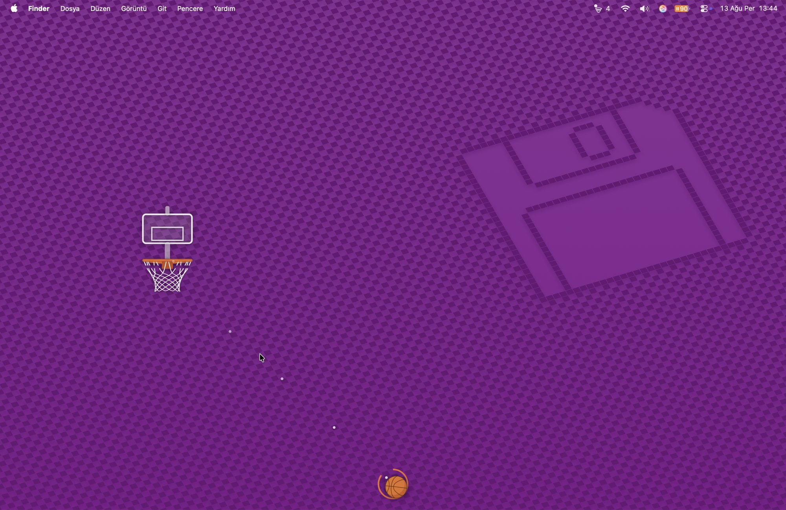
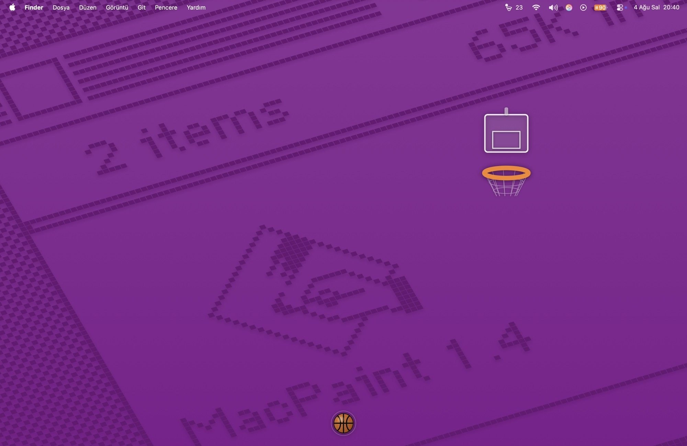

Your whole screen is the court.
A hoop and a basketball float above everything you are working in. Throw the ball across your own desktop and try to sink it. There is no game window — nothing to move, nothing to resize, nothing to close.
Free · macOS 13 or later · Apple silicon and Intel · about a megabyte

How it plays
One gesture, and a hoop that hangs somewhere new every time
There are no levels, no modes and no menus to learn. The difficulty is the hoop itself, and it only gets harder because you are getting better.
-
Throw it, don't sling it
Drag the ball toward where you want it to go and let go. The ball rests on the floor, so there is a whole screen of room above it and none below — pulling back would have wasted half the power range.
-
Gravity, so you read an arc
The shot is a curve, not a line. What you are judging is the shape of the arc, which is why the same distance can be reached two different ways.
-
The hoop moves in two directions
Every basket rehangs it somewhere new — anywhere across the screen, and at any height from just under the menu bar down to halfway. No two shots have the same shape.
-
The backboard is on your side
It is solid only while the ball is rising, and a hit turns the ball down and steers it toward the middle of the rim. Banking is meant to help, the way it does on a real court.
-
Score and the rim tightens
Every basket in a row takes a little off the rim. Miss once and it opens back up. From three in a row the hoop starts drifting while you aim.
-
A basket resets nothing
The ball drops through, hits the floor and rattles to a halt, and your next shot is taken from wherever it ends up. Only the hoop moves.
Staying out of the way
Clicks fall straight through
Hoop Hoop covers the screen but listens only while your cursor is actually on the ball. Everywhere else it is transparent to the mouse, so your editor, your browser and your Dock behave exactly as if it were not running.
Clicking the ball never takes focus away from the app you were typing in, either — the window is built so that it cannot become the active one. There are deliberately no keyboard shortcuts, for the same reason.
The ball is also the only thing on your desktop that is yours to lose track of, so it breathes gently while it waits.

A desk toy, not an app
It lives in the menu bar and stays out of your way while it waits
No Dock icon, no window in your app switcher, no notifications. The menu-bar icon carries the live score, and everything else — new ball, reset, mute, volume, theme, always on top, open at login — is one click away in its menu.
-
Idle means idle
A ball at rest stops the animation timer dead — nothing is drawn and nothing is stepped. Sampled on a settled desktop, the app's main thread is asleep in every single sample.
-
Half a percent, and it buys something
All that keeps running is the audio engine holding the output awake, around 0.5% of one core. Let the output sleep and the first bounce after a quiet spell loses its attack.
-
Nothing to download but the app
Every sound — the throw, the rim, the board, the swish — is synthesised in code when the app starts. Nothing is streamed and nothing is fetched.
-
It survives your day
Sleep, waking up, plugging in headphones or an external display: the audio engine rebuilds itself instead of quietly going silent by the afternoon.
Price
Free
No price, no subscription, no in-app purchases, no ads, and no "pro" version withholding half the game. There is nothing to buy and nothing held back.
- Every future update to Hoop Hoop is included.
- Works on all your own Macs through Family Sharing.
- Nothing is locked, timed or held back.
Questions
Before you ask
Does it get in the way while I work?
That is the one thing it is built not to do. Outside the ball it is transparent to the mouse, it cannot take keyboard focus, and it never raises itself over a full-screen app. If you want it gone for a while, Show / Hide is in the menu.
How is this different from Kick Kick?
Kick Kick is football seen from above: the pitch is flat, there is no gravity, and the shot is a straight line into a goal that drifts sideways. Hoop Hoop has gravity, so the shot is an arc you have to read, and the hoop hangs at a different height every time as well as a different place. They share a shell, not a game.
What about multiple monitors?
Hoop Hoop plays on your main screen. If enough people want the ball to roam across displays, that is a fair thing to add — say so and it will get looked at.
Can it bounce off my actual windows?
No, and that is on purpose. Tracking every window's edges live would mean asking for accessibility permissions, and a small toy should not be demanding that kind of access.
Does it need the microphone, camera, or my files?
None of them. It asks for no permissions at all.
Will it drain my battery if I leave it open?
No. When the ball is at rest there is no timer running and nothing being redrawn — sampled on a settled desktop, the main thread is asleep in every sample. What is left is the audio engine keeping the output awake, about half a percent of one core, and that is what stops the first bounce after a quiet spell from arriving without its attack.